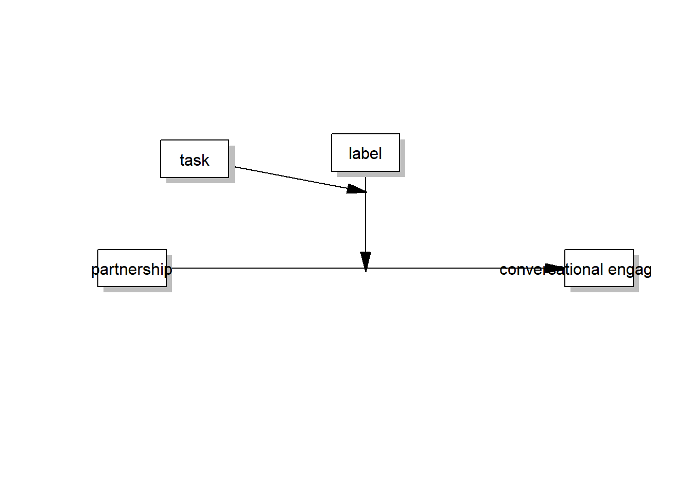

library(tidyverse)
library(dplyr)
library(psych)
library(corrplot)
library(lavaan)
library(processR)
library(jtools)
library(interactions)
library(ggplot2)
library(patchwork)
library(ggpubr)
library(mediation)HMCvsHHC
Examining Effects of HMC and Labels on Feeling Heard and Conversational Engagement
This section will examine the effects of HMC and partner labels on people’s feelings of being heard (feeling heard) and conversational engagement under various contexts (i.e., emotional tasks vs. functional tasks).
Hypotheses:
H1: In contrast to HHC, HMC leads to more conversational engagement.
H2: Partner labels moderate the relationship between partnership (HMC vs. HHC) and conversational engagement.
H3: Task types influence the moderating effect of partner labels on the relationship between partnership and conversational engagement.
H4: Feeling heard mediates the relationship between partnership and conversational engagement.
H5: Partner labels moderate (a) the direct effect and (b) the indirect effect of partnership on conversational engagement through feeling heard.
Data
Load data of the user level.
file_path <- "data/data_UserAsObservation.csv"
data <- read_csv(file_path)Rows: 904 Columns: 47
── Column specification ────────────────────────────────────────────────────────
Delimiter: ","
chr (13): user.id, merged_text, user.name, user.task_type, user.partnership...
dbl (32): con_id, finish_both_con, backup_bot, ai_usage, age, sense_of_agen...
dttm (2): user.start_utc, user.end_utc
ℹ Use `spec()` to retrieve the full column specification for this data.
ℹ Specify the column types or set `show_col_types = FALSE` to quiet this message.Extract users that completed both rounds of conversations and did not chat with bots in the 2nd round.
data_ext <- data |>
filter(finish_both_con == 1 & backup_bot == 0) |>
janitor::clean_names() |> # turn all variable names into snake case at once
rename(
soa_1 = so_a_1,
soa_2 = so_a_2,
soa_3 = so_a_3,
soa_4 = so_a_4,
task = user_task_type,
partnership = user_partnership,
label = user_partner_label,
) |>
mutate(
task = factor(task, levels = c("emotionTask", "functionTask")),
partnership = factor(partnership, levels = c("HMC", "HHC")),
label = factor(label, levels = c("human", "chatbot")),
)
dim(data_ext)[1] 676 47# glimpse(data_ext)
describe((data_ext))Warning in FUN(newX[, i], ...): no non-missing arguments to min; returning Inf
Warning in FUN(newX[, i], ...): no non-missing arguments to min; returning InfWarning in FUN(newX[, i], ...): no non-missing arguments to max; returning -Inf
Warning in FUN(newX[, i], ...): no non-missing arguments to max; returning -Inf vars n mean sd median trimmed mad min max range
user_id* 1 676 338.50 195.29 338.50 338.50 250.56 1 676 675
con_id 2 676 1.00 0.00 1.00 1.00 0.00 1 1 0
merged_text* 3 676 338.50 195.29 338.50 338.50 250.56 1 676 675
finish_both_con 4 676 1.00 0.00 1.00 1.00 0.00 1 1 0
backup_bot 5 676 0.00 0.00 0.00 0.00 0.00 0 0 0
user_start_utc 6 676 NaN NA NA NaN NA Inf -Inf -Inf
user_end_utc 7 676 NaN NA NA NaN NA Inf -Inf -Inf
user_name* 8 676 284.33 163.81 278.50 283.39 207.56 1 575 574
task* 9 676 1.49 0.50 1.00 1.49 0.00 1 2 1
partnership* 10 676 1.51 0.50 2.00 1.51 0.00 1 2 1
label* 11 676 1.52 0.50 2.00 1.52 0.00 1 2 1
user_priming_text* 12 676 337.57 195.18 337.50 337.50 250.56 1 675 674
ai_usage 13 676 4.77 1.43 5.00 4.85 1.48 1 7 6
age 14 676 44.01 13.13 43.00 43.39 14.83 20 94 74
gender* 15 676 2.71 1.47 4.00 2.76 0.00 1 4 3
race* 16 676 5.90 1.81 7.00 6.20 0.00 1 7 6
education* 17 676 5.04 2.87 4.00 4.90 1.48 1 10 9
partisanship* 18 676 2.30 1.28 2.00 2.25 1.48 1 4 3
report_label* 19 676 1.50 0.53 1.00 1.48 0.00 1 3 2
sense_of_agency 20 676 4.97 1.43 5.00 5.09 1.48 1 7 6
feeling_heard 21 676 4.84 1.55 5.00 4.97 1.48 1 7 6
ai_literacy 22 676 5.45 0.99 5.50 5.53 0.74 1 7 6
religiosity 23 676 3.82 2.04 4.00 3.79 2.97 1 7 6
con_engage 24 676 4.68 1.47 4.75 4.77 1.85 1 7 6
soa_1 25 676 5.15 1.66 6.00 5.37 1.48 1 7 6
soa_2 26 676 4.88 1.73 5.00 5.04 1.48 1 7 6
soa_3 27 676 5.77 1.40 6.00 6.03 1.48 1 7 6
soa_4 28 676 4.08 2.10 4.00 4.10 2.97 1 7 6
fh_1 29 676 5.15 1.69 6.00 5.38 1.48 1 7 6
fh_2 30 676 5.25 1.64 6.00 5.48 1.48 1 7 6
fh_3 31 676 4.89 1.74 5.00 5.05 1.48 1 7 6
fh_4 32 676 4.07 1.91 4.00 4.09 2.97 1 7 6
ail_1 33 676 5.33 1.10 5.00 5.41 1.48 1 7 6
ail_2 34 676 5.37 1.11 6.00 5.45 1.48 1 7 6
ail_3 35 676 5.63 1.29 6.00 5.82 1.48 1 7 6
ail_4 36 676 5.48 1.34 6.00 5.66 1.48 1 7 6
rlg_1 37 676 3.77 2.22 4.00 3.71 2.97 1 7 6
rlg_2 38 676 3.98 2.23 4.00 3.97 2.97 1 7 6
rlg_3 39 676 3.58 2.12 4.00 3.47 2.97 1 7 6
rlg_4 40 676 3.94 2.14 4.00 3.93 2.97 1 7 6
ce_1 41 676 4.08 1.89 4.00 4.12 2.97 1 7 6
ce_2 42 676 5.05 1.73 6.00 5.26 1.48 1 7 6
ce_3 43 676 5.47 1.53 6.00 5.73 1.48 1 7 6
ce_4 44 676 4.11 1.97 4.00 4.14 2.97 1 7 6
turn_count 45 676 8.21 3.19 8.00 7.92 2.97 1 16 15
report_label_code* 46 676 1.50 0.53 1.00 1.48 0.00 1 3 2
manipulation_pass 47 676 0.95 0.21 1.00 1.00 0.00 0 1 1
skew kurtosis se
user_id* 0.00 -1.21 7.51
con_id NaN NaN 0.00
merged_text* 0.00 -1.21 7.51
finish_both_con NaN NaN 0.00
backup_bot NaN NaN 0.00
user_start_utc NA NA NA
user_end_utc NA NA NA
user_name* 0.07 -1.19 6.30
task* 0.04 -2.00 0.02
partnership* -0.04 -2.00 0.02
label* -0.07 -2.00 0.02
user_priming_text* 0.00 -1.21 7.51
ai_usage -0.54 0.07 0.05
age 0.43 -0.31 0.51
gender* -0.27 -1.91 0.06
race* -1.16 -0.45 0.07
education* 0.54 -0.98 0.11
partisanship* 0.37 -1.56 0.05
report_label* 0.30 -1.26 0.02
sense_of_agency -0.73 0.11 0.05
feeling_heard -0.67 -0.24 0.06
ai_literacy -1.00 1.73 0.04
religiosity -0.09 -1.39 0.08
con_engage -0.50 -0.46 0.06
soa_1 -1.00 0.17 0.06
soa_2 -0.73 -0.39 0.07
soa_3 -1.64 2.73 0.05
soa_4 -0.16 -1.37 0.08
fh_1 -1.00 0.15 0.07
fh_2 -1.02 0.24 0.06
fh_3 -0.70 -0.45 0.07
fh_4 -0.09 -1.12 0.07
ail_1 -1.09 2.03 0.04
ail_2 -1.07 1.84 0.04
ail_3 -1.40 2.29 0.05
ail_4 -1.32 1.89 0.05
rlg_1 -0.01 -1.54 0.09
rlg_2 -0.17 -1.53 0.09
rlg_3 0.12 -1.39 0.08
rlg_4 -0.15 -1.38 0.08
ce_1 -0.20 -1.26 0.07
ce_2 -0.88 -0.12 0.07
ce_3 -1.35 1.29 0.06
ce_4 -0.18 -1.25 0.08
turn_count 0.69 0.07 0.12
report_label_code* 0.30 -1.26 0.02
manipulation_pass -4.33 16.80 0.01Reliability & Validity
# Descriptive statistics
table(data_ext$gender)
Man Nonbinary Something else Woman
284 11 1 380 describe(data_ext$age) vars n mean sd median trimmed mad min max range skew kurtosis se
X1 1 676 44.01 13.13 43 43.39 14.83 20 94 74 0.43 -0.31 0.51table(data_ext$race) |> prop.table()
American Indian or Alaska Native
0.00295858
Asian
0.05769231
Black or African American
0.15088757
Hispanic or Latino
0.05473373
Native Hawaiian or other Pacific Islander
0.00147929
Other
0.02514793
White
0.70710059 table(data_ext$partisanship) |> prop.table()
Democrat Independent Other Republican
0.38017751 0.26775148 0.02071006 0.33136095 table(data_ext$education) |> prop.table()
Associate degree in college - Academic program
0.07692308
Associate degree in college - Occupational/vocational program
0.05621302
Bachelor's degree (e.g., BA, AB, BS)
0.34467456
Doctorate degree (e.g., PhD, EdD)
0.03402367
High school graduate - High school diploma or equivalent (e.g., GED)
0.12721893
Less than high school credential
0.00591716
Master's degree (e.g., MA, MS, MEng, MEd, MSW, MBA)
0.17307692
Other
0.00295858
Professional school degree (e.g., MD, DDS, DVM, LLB, JD)
0.01479290
Some college but no degree
0.16420118 describe(data_ext$ai_usage) vars n mean sd median trimmed mad min max range skew kurtosis se
X1 1 676 4.77 1.43 5 4.85 1.48 1 7 6 -0.54 0.07 0.05describe(data_ext$ai_literacy) vars n mean sd median trimmed mad min max range skew kurtosis se
X1 1 676 5.45 0.99 5.5 5.53 0.74 1 7 6 -1 1.73 0.04# Confirmatory Factor analysis
# Feeling heard, sense of agency, conversational engagement, AI literacy
# ail =~ ail_1 + ail_2 + ail_3 + ail_4
# soa =~ soa_1 + soa_2 + soa_3 + soa_4
cfa_model <- '
fh =~ fh_1 + fh_2 + fh_3 + fh_4
ce =~ ce_1 + ce_2 + ce_3 +ce_4
'
fit <- cfa(cfa_model, data = data_ext)
summary(fit, fit.measures = TRUE)lavaan 0.6-19 ended normally after 35 iterations
Estimator ML
Optimization method NLMINB
Number of model parameters 17
Number of observations 676
Model Test User Model:
Test statistic 328.169
Degrees of freedom 19
P-value (Chi-square) 0.000
Model Test Baseline Model:
Test statistic 4003.610
Degrees of freedom 28
P-value 0.000
User Model versus Baseline Model:
Comparative Fit Index (CFI) 0.922
Tucker-Lewis Index (TLI) 0.885
Loglikelihood and Information Criteria:
Loglikelihood user model (H0) -8882.889
Loglikelihood unrestricted model (H1) -8718.804
Akaike (AIC) 17799.777
Bayesian (BIC) 17876.552
Sample-size adjusted Bayesian (SABIC) 17822.576
Root Mean Square Error of Approximation:
RMSEA 0.155
90 Percent confidence interval - lower 0.141
90 Percent confidence interval - upper 0.170
P-value H_0: RMSEA <= 0.050 0.000
P-value H_0: RMSEA >= 0.080 1.000
Standardized Root Mean Square Residual:
SRMR 0.051
Parameter Estimates:
Standard errors Standard
Information Expected
Information saturated (h1) model Structured
Latent Variables:
Estimate Std.Err z-value P(>|z|)
fh =~
fh_1 1.000
fh_2 0.901 0.032 28.547 0.000
fh_3 1.028 0.031 33.134 0.000
fh_4 1.026 0.037 27.542 0.000
ce =~
ce_1 1.000
ce_2 1.039 0.045 22.990 0.000
ce_3 0.766 0.041 18.761 0.000
ce_4 0.918 0.053 17.346 0.000
Covariances:
Estimate Std.Err z-value P(>|z|)
fh ~~
ce 1.966 0.139 14.097 0.000
Variances:
Estimate Std.Err z-value P(>|z|)
.fh_1 0.612 0.046 13.376 0.000
.fh_2 0.859 0.055 15.525 0.000
.fh_3 0.625 0.047 13.198 0.000
.fh_4 1.253 0.079 15.848 0.000
.ce_1 1.522 0.097 15.650 0.000
.ce_2 0.756 0.062 12.230 0.000
.ce_3 1.142 0.070 16.261 0.000
.ce_4 2.153 0.128 16.779 0.000
fh 2.254 0.156 14.494 0.000
ce 2.062 0.184 11.223 0.000# Reliability
alpha(data_ext[, c("fh_1", "fh_2", "fh_3", "fh_4")])
Reliability analysis
Call: alpha(x = data_ext[, c("fh_1", "fh_2", "fh_3", "fh_4")])
raw_alpha std.alpha G6(smc) average_r S/N ase mean sd median_r
0.91 0.91 0.89 0.72 10 0.0056 4.8 1.6 0.74
95% confidence boundaries
lower alpha upper
Feldt 0.9 0.91 0.92
Duhachek 0.9 0.91 0.92
Reliability if an item is dropped:
raw_alpha std.alpha G6(smc) average_r S/N alpha se var.r med.r
fh_1 0.87 0.88 0.83 0.70 7.0 0.0084 0.00521 0.73
fh_2 0.89 0.90 0.86 0.74 8.6 0.0071 0.00199 0.75
fh_3 0.87 0.87 0.83 0.69 6.8 0.0089 0.00561 0.69
fh_4 0.90 0.91 0.87 0.76 9.5 0.0063 0.00057 0.77
Item statistics
n raw.r std.r r.cor r.drop mean sd
fh_1 676 0.91 0.91 0.87 0.83 5.1 1.7
fh_2 676 0.87 0.88 0.82 0.77 5.3 1.6
fh_3 676 0.92 0.92 0.89 0.85 4.9 1.7
fh_4 676 0.87 0.86 0.79 0.75 4.1 1.9
Non missing response frequency for each item
1 2 3 4 5 6 7 miss
fh_1 0.05 0.06 0.04 0.12 0.19 0.32 0.21 0
fh_2 0.04 0.05 0.06 0.11 0.17 0.34 0.23 0
fh_3 0.06 0.08 0.07 0.16 0.17 0.29 0.18 0
fh_4 0.12 0.15 0.08 0.25 0.11 0.17 0.12 0alpha(data_ext[, c("soa_1", "soa_2", "soa_3", "soa_4")])
Reliability analysis
Call: alpha(x = data_ext[, c("soa_1", "soa_2", "soa_3", "soa_4")])
raw_alpha std.alpha G6(smc) average_r S/N ase mean sd median_r
0.84 0.85 0.85 0.58 5.6 0.01 5 1.4 0.59
95% confidence boundaries
lower alpha upper
Feldt 0.82 0.84 0.86
Duhachek 0.82 0.84 0.86
Reliability if an item is dropped:
raw_alpha std.alpha G6(smc) average_r S/N alpha se var.r med.r
soa_1 0.80 0.81 0.77 0.59 4.3 0.012 0.0194 0.59
soa_2 0.74 0.77 0.73 0.53 3.4 0.017 0.0275 0.45
soa_3 0.80 0.81 0.77 0.58 4.2 0.013 0.0221 0.60
soa_4 0.83 0.84 0.79 0.64 5.2 0.011 0.0057 0.60
Item statistics
n raw.r std.r r.cor r.drop mean sd
soa_1 676 0.81 0.83 0.76 0.66 5.1 1.7
soa_2 676 0.89 0.88 0.84 0.78 4.9 1.7
soa_3 676 0.80 0.83 0.76 0.68 5.8 1.4
soa_4 676 0.82 0.78 0.70 0.62 4.1 2.1
Non missing response frequency for each item
1 2 3 4 5 6 7 miss
soa_1 0.05 0.06 0.05 0.10 0.20 0.33 0.20 0
soa_2 0.06 0.08 0.07 0.14 0.21 0.28 0.17 0
soa_3 0.03 0.02 0.03 0.04 0.18 0.34 0.36 0
soa_4 0.18 0.13 0.07 0.16 0.11 0.21 0.14 0alpha(data_ext[, c("ce_1", "ce_2", "ce_3", "ce_4")])
Reliability analysis
Call: alpha(x = data_ext[, c("ce_1", "ce_2", "ce_3", "ce_4")])
raw_alpha std.alpha G6(smc) average_r S/N ase mean sd median_r
0.84 0.84 0.82 0.57 5.4 0.01 4.7 1.5 0.57
95% confidence boundaries
lower alpha upper
Feldt 0.82 0.84 0.86
Duhachek 0.82 0.84 0.86
Reliability if an item is dropped:
raw_alpha std.alpha G6(smc) average_r S/N alpha se var.r med.r
ce_1 0.79 0.80 0.73 0.56 3.9 0.014 0.0087 0.53
ce_2 0.78 0.78 0.71 0.54 3.5 0.014 0.0067 0.50
ce_3 0.81 0.81 0.75 0.59 4.4 0.012 0.0036 0.62
ce_4 0.81 0.81 0.76 0.59 4.4 0.013 0.0092 0.62
Item statistics
n raw.r std.r r.cor r.drop mean sd
ce_1 676 0.84 0.83 0.76 0.70 4.1 1.9
ce_2 676 0.85 0.86 0.80 0.72 5.1 1.7
ce_3 676 0.78 0.80 0.71 0.64 5.5 1.5
ce_4 676 0.82 0.81 0.71 0.65 4.1 2.0
Non missing response frequency for each item
1 2 3 4 5 6 7 miss
ce_1 0.11 0.18 0.09 0.13 0.19 0.22 0.08 0
ce_2 0.06 0.06 0.05 0.14 0.17 0.31 0.20 0
ce_3 0.04 0.05 0.03 0.07 0.18 0.38 0.25 0
ce_4 0.14 0.15 0.08 0.17 0.15 0.20 0.11 0# alpha(data_ext[, c("ail_1", "ail_2", "ail_3", "ail_4")])# DV statistics
describe(data_ext[, c("feeling_heard", "sense_of_agency", "con_engage")]) vars n mean sd median trimmed mad min max range skew
feeling_heard 1 676 4.84 1.55 5.00 4.97 1.48 1 7 6 -0.67
sense_of_agency 2 676 4.97 1.43 5.00 5.09 1.48 1 7 6 -0.73
con_engage 3 676 4.68 1.47 4.75 4.77 1.85 1 7 6 -0.50
kurtosis se
feeling_heard -0.24 0.06
sense_of_agency 0.11 0.05
con_engage -0.46 0.06# Create dummy variables
data_ext$HMC <- ifelse(data_ext$partnership == "HMC", 1, 0)
data_ext$bot_labeled <- ifelse(data_ext$label == "chatbot", 1, 0)
data_ext$emotion_task <- ifelse(data_ext$task == "emotionTask", 1, 0)Main Effect: OLS Regression
IV: partnership (HMC), label (bot_labeled), task (emotion_task);
DV: con_engage
Mediator: feeling_heard
Results:
Partnership and partner labels exerted significant main effect on conversational engagement. H1 was supported.
2-way interaction: The effect of partnership on conversational engagement was moderated by partner labels.
- Communicating with an artificial agent (a chatbot partner) was more likely to induce conversational engagement once the partner was labeled as a chatbot compared to human labeling. H2 was supported.
No 3-way interaction effect. H3 was not supported.
fit1 <- lm(con_engage ~ HMC + bot_labeled + emotion_task, data = data_ext)
summ(fit1)MODEL INFO:
Observations: 676
Dependent Variable: con_engage
Type: OLS linear regression
MODEL FIT:
F(3,672) = 7.91, p = 0.00
R² = 0.03
Adj. R² = 0.03
Standard errors:OLS
-------------------------------------------------
Est. S.E. t val. p
------------------ ------- ------ -------- ------
(Intercept) 4.54 0.11 40.75 0.00
HMC 0.43 0.11 3.85 0.00
bot_labeled -0.30 0.11 -2.65 0.01
emotion_task 0.16 0.11 1.42 0.16
-------------------------------------------------Moderation
fit2 <- lm(con_engage ~ HMC * bot_labeled + emotion_task, data = data_ext)
summ(fit2)MODEL INFO:
Observations: 676
Dependent Variable: con_engage
Type: OLS linear regression
MODEL FIT:
F(4,671) = 8.11, p = 0.00
R² = 0.05
Adj. R² = 0.04
Standard errors:OLS
----------------------------------------------------
Est. S.E. t val. p
--------------------- ------- ------ -------- ------
(Intercept) 4.70 0.12 37.80 0.00
HMC 0.09 0.16 0.59 0.55
bot_labeled -0.61 0.16 -3.94 0.00
emotion_task 0.15 0.11 1.36 0.17
HMC:bot_labeled 0.65 0.22 2.91 0.00
----------------------------------------------------fit3 <- lm(con_engage ~ HMC * emotion_task + bot_labeled, data = data_ext)
summ(fit3)MODEL INFO:
Observations: 676
Dependent Variable: con_engage
Type: OLS linear regression
MODEL FIT:
F(4,671) = 6.11, p = 0.00
R² = 0.04
Adj. R² = 0.03
Standard errors:OLS
-----------------------------------------------------
Est. S.E. t val. p
---------------------- ------- ------ -------- ------
(Intercept) 4.49 0.12 36.05 0.00
HMC 0.53 0.16 3.30 0.00
emotion_task 0.25 0.16 1.61 0.11
bot_labeled -0.29 0.11 -2.62 0.01
HMC:emotion_task -0.19 0.22 -0.85 0.40
-----------------------------------------------------fit4 <- lm(con_engage ~ HMC + bot_labeled * emotion_task, data = data_ext)
summ(fit4)MODEL INFO:
Observations: 676
Dependent Variable: con_engage
Type: OLS linear regression
MODEL FIT:
F(4,671) = 8.51, p = 0.00
R² = 0.05
Adj. R² = 0.04
Standard errors:OLS
-------------------------------------------------------------
Est. S.E. t val. p
------------------------------ ------- ------ -------- ------
(Intercept) 4.35 0.13 34.61 0.00
HMC 0.44 0.11 3.94 0.00
bot_labeled 0.06 0.16 0.39 0.70
emotion_task 0.52 0.16 3.27 0.00
bot_labeled:emotion_task -0.70 0.22 -3.16 0.00
-------------------------------------------------------------# Incorrect
# ggplot(data_ext,
# aes(y = con_engage, x = HMC, color = label)) +
# geom_smooth(method = "loess", formula = "y ~ x") +
# # facet_wrap(~label) +
# theme_bw() +
# xlab("Partnership") +
# ylab("Conversational Engagement") +
# labs(color = "Partner Label")
# ggsave("output/inter_plot_conEngage.jpg", width = 8, height = 6, dpi = 300)res_simslopes <- sim_slopes(fit2, pred = HMC, modx = bot_labeled, jnplot = TRUE)
print(res_simslopes)JOHNSON-NEYMAN INTERVAL
When bot_labeled is OUTSIDE the interval [-1.64, 0.24], the slope of HMC is
p < .05.
Note: The range of observed values of bot_labeled is [0.00, 1.00]-1.png)
SIMPLE SLOPES ANALYSIS
Slope of HMC when bot_labeled = 0.00 (0):
Est. S.E. t val. p
------ ------ -------- ------
0.09 0.16 0.59 0.55
Slope of HMC when bot_labeled = 1.00 (1):
Est. S.E. t val. p
------ ------ -------- ------
0.74 0.15 4.80 0.00p1 <- res_simslopes$jnplot +
theme_apa() +
labs(title = "", x = "Partner Label", y = "Slope of Partner Type") +
theme(legend.position = "none")
# p1 <- johnson_neyman(fit2, pred = HMC, modx = bot_labeled, title = "")[3]$plot +
# theme(legend.position = "bottom") # The result is different from sim_slopes function?
p2 <- interact_plot(fit2, pred = HMC, modx = bot_labeled, interval = TRUE, modx.values = c(1, 0), modx.labels = c("AI Chatbot Label", "Human Label"), legend.main = "", colors = "CUD") +
theme_apa() +
ylab("Conversational Engagement") +
xlab("Partner Type") +
scale_x_continuous(breaks = c(0, 1), labels = c("Human", "AI Chatbot")) +
theme(legend.position = "right")Scale for x is already present.
Adding another scale for x, which will replace the existing scale.p1 + p2 +
plot_annotation(tag_levels = "A")-2.png)
# ggsave("output/inter_plot_HMClabel_conEngage.jpg", width = 8, height = 6, dpi = 300)res_simslopes2 <- sim_slopes(fit4, pred = emotion_task, modx = bot_labeled, jnplot = TRUE)
print(res_simslopes2)JOHNSON-NEYMAN INTERVAL
When bot_labeled is OUTSIDE the interval [0.43, 1.34], the slope of
emotion_task is p < .05.
Note: The range of observed values of bot_labeled is [0.00, 1.00]-1.png)
SIMPLE SLOPES ANALYSIS
Slope of emotion_task when bot_labeled = 0.00 (0):
Est. S.E. t val. p
------ ------ -------- ------
0.52 0.16 3.27 0.00
Slope of emotion_task when bot_labeled = 1.00 (1):
Est. S.E. t val. p
------- ------ -------- ------
-0.18 0.15 -1.17 0.24p1a <- res_simslopes2$jnplot +
theme_apa() +
labs(title = "", x = "Partner Label", y = "Slope of Tasks") +
theme(legend.position = "bottom")
p2b <- interact_plot(fit4, pred = emotion_task, modx = bot_labeled, interval = TRUE, modx.values = c(1, 0), modx.labels = c("AI Chatbot Label", "Human Label"), legend.main = "", colors = "CUD") +
theme_apa() +
ylab("Conversationa Engagement") +
xlab("Task") +
scale_x_continuous(breaks = c(0, 1), labels = c("Functional", "Emotional"))Scale for x is already present.
Adding another scale for x, which will replace the existing scale. theme(legend.position = "bottom")List of 1
$ legend.position: chr "bottom"
- attr(*, "class")= chr [1:2] "theme" "gg"
- attr(*, "complete")= logi FALSE
- attr(*, "validate")= logi TRUE(p1 + p2 + p1a + p2b) +
plot_layout(guides = "collect") +
plot_annotation(tag_levels = "A") &
theme(legend.position = "right")-2.png)
# ggsave("output/inter_plot_twoInter_conEngage.jpg", width = 10, height = 6, dpi = 300)Moderated Moderation
- Label as a moderator; Task as a moderator’s moderator.
# model 3
labels <- list(Y = "conversational engagement", X = "partnership", W = "label", Z = "task")
pmacroModel(no = 3, labels = labels)
fit5 <- lm(con_engage ~ HMC + bot_labeled + emotion_task + HMC:bot_labeled:emotion_task, data = data_ext)
summ(fit5)MODEL INFO:
Observations: 676
Dependent Variable: con_engage
Type: OLS linear regression
MODEL FIT:
F(4,671) = 5.96, p = 0.00
R² = 0.03
Adj. R² = 0.03
Standard errors:OLS
-----------------------------------------------------------------
Est. S.E. t val. p
---------------------------------- ------- ------ -------- ------
(Intercept) 4.56 0.13 36.32 0.00
HMC 0.41 0.13 3.21 0.00
bot_labeled -0.32 0.13 -2.53 0.01
emotion_task 0.14 0.13 1.08 0.28
HMC:bot_labeled:emotion_task 0.09 0.22 0.40 0.69
-----------------------------------------------------------------Results:
- No moderated moderation. H3 was not supported.
coef_names <- c(
"Partnership: HMC" = "HMC", "Bot_labeled" = "bot_labeled", "Emotion_task" = "emotion_task", "HMC × bot_labeled" = "HMC:bot_labeled", "HMC × emotion_task" = "HMC:emotion_task", "Bot_labeled × emotion_task" = "bot_labeled:emotion_task", "HMC × bot_labeled × emotion_task" = "HMC:bot_labeled:emotion_task", "Constant" = "(Intercept)")
jtools::export_summs(fit1, fit2, fit3, fit4, fit5, robust = "HC3", coefs = coef_names, to.file = "xlsx", file.name = "output/main&2way_conEngage.xlsx")| Model 1 | Model 2 | Model 3 | Model 4 | Model 5 | |
|---|---|---|---|---|---|
| Partnership: HMC | 0.43 *** | 0.09 | 0.53 *** | 0.44 *** | 0.41 ** |
| (0.11) | (0.16) | (0.16) | (0.11) | (0.13) | |
| Bot_labeled | -0.30 ** | -0.61 *** | -0.29 ** | 0.06 | -0.32 * |
| (0.11) | (0.17) | (0.11) | (0.16) | (0.13) | |
| Emotion_task | 0.16 | 0.15 | 0.25 | 0.52 ** | 0.14 |
| (0.11) | (0.11) | (0.17) | (0.16) | (0.13) | |
| HMC × bot_labeled | 0.65 ** | ||||
| (0.22) | |||||
| HMC × emotion_task | -0.19 | ||||
| (0.22) | |||||
| Bot_labeled × emotion_task | -0.70 ** | ||||
| (0.22) | |||||
| HMC × bot_labeled × emotion_task | 0.09 | ||||
| (0.22) | |||||
| Constant | 4.54 *** | 4.70 *** | 4.49 *** | 4.35 *** | 4.56 *** |
| (0.11) | (0.13) | (0.13) | (0.13) | (0.13) | |
| N | 676 | 676 | 676 | 676 | 676 |
| R2 | 0.03 | 0.05 | 0.04 | 0.05 | 0.03 |
| Standard errors are heteroskedasticity robust. *** p < 0.001; ** p < 0.01; * p < 0.05. | |||||
Mediation: Feeling Heard
- Feeling heard as a mediator.
- DV: Conversational Engagement
# a path
fit6 <- lm(feeling_heard ~ HMC + bot_labeled + emotion_task, data = data_ext)
summ(fit6)MODEL INFO:
Observations: 676
Dependent Variable: feeling_heard
Type: OLS linear regression
MODEL FIT:
F(3,672) = 13.86, p = 0.00
R² = 0.06
Adj. R² = 0.05
Standard errors:OLS
-------------------------------------------------
Est. S.E. t val. p
------------------ ------- ------ -------- ------
(Intercept) 4.52 0.12 38.95 0.00
HMC 0.71 0.12 6.14 0.00
bot_labeled -0.19 0.12 -1.61 0.11
emotion_task 0.13 0.12 1.14 0.25
-------------------------------------------------fit7 <- lm(feeling_heard ~ HMC*bot_labeled + emotion_task, data = data_ext)
summ(fit7)MODEL INFO:
Observations: 676
Dependent Variable: feeling_heard
Type: OLS linear regression
MODEL FIT:
F(4,671) = 12.24, p = 0.00
R² = 0.07
Adj. R² = 0.06
Standard errors:OLS
----------------------------------------------------
Est. S.E. t val. p
--------------------- ------- ------ -------- ------
(Intercept) 4.68 0.13 36.04 0.00
HMC 0.40 0.17 2.37 0.02
bot_labeled -0.49 0.16 -3.01 0.00
emotion_task 0.13 0.12 1.09 0.28
HMC:bot_labeled 0.61 0.23 2.65 0.01
----------------------------------------------------# b, c' path
fit8 <- lm(con_engage ~ HMC + bot_labeled + emotion_task + feeling_heard, data = data_ext)
summ(fit8)MODEL INFO:
Observations: 676
Dependent Variable: con_engage
Type: OLS linear regression
MODEL FIT:
F(4,671) = 292.32, p = 0.00
R² = 0.64
Adj. R² = 0.63
Standard errors:OLS
--------------------------------------------------
Est. S.E. t val. p
------------------- ------- ------ -------- ------
(Intercept) 1.12 0.12 9.03 0.00
HMC -0.11 0.07 -1.58 0.12
bot_labeled -0.15 0.07 -2.23 0.03
emotion_task 0.06 0.07 0.85 0.40
feeling_heard 0.76 0.02 33.26 0.00
--------------------------------------------------fit9 <- lm(con_engage ~ HMC*bot_labeled + emotion_task + feeling_heard, data = data_ext)
summ(fit9)MODEL INFO:
Observations: 676
Dependent Variable: con_engage
Type: OLS linear regression
MODEL FIT:
F(5,670) = 234.48, p = 0.00
R² = 0.64
Adj. R² = 0.63
Standard errors:OLS
----------------------------------------------------
Est. S.E. t val. p
--------------------- ------- ------ -------- ------
(Intercept) 1.18 0.13 8.93 0.00
HMC -0.20 0.10 -2.06 0.04
bot_labeled -0.24 0.10 -2.52 0.01
emotion_task 0.06 0.07 0.82 0.41
feeling_heard 0.75 0.02 32.98 0.00
HMC:bot_labeled 0.18 0.14 1.33 0.18
----------------------------------------------------export_summs(fit6, fit7, fit8, fit9,
robust = "HC3", to.file = "xlsx", file.name = "output/ce&fh.xlsx")| Model 1 | Model 2 | Model 3 | Model 4 | |
|---|---|---|---|---|
| (Intercept) | 4.52 *** | 4.68 *** | 1.12 *** | 1.18 *** |
| (0.12) | (0.14) | (0.15) | (0.16) | |
| HMC | 0.71 *** | 0.40 * | -0.11 | -0.20 * |
| (0.12) | (0.16) | (0.07) | (0.10) | |
| bot_labeled | -0.19 | -0.49 ** | -0.15 * | -0.24 * |
| (0.12) | (0.18) | (0.07) | (0.10) | |
| emotion_task | 0.13 | 0.13 | 0.06 | 0.06 |
| (0.12) | (0.12) | (0.07) | (0.07) | |
| HMC:bot_labeled | 0.61 ** | 0.18 | ||
| (0.23) | (0.14) | |||
| feeling_heard | 0.76 *** | 0.75 *** | ||
| (0.03) | (0.03) | |||
| N | 676 | 676 | 676 | 676 |
| R2 | 0.06 | 0.07 | 0.64 | 0.64 |
| Standard errors are heteroskedasticity robust. *** p < 0.001; ** p < 0.01; * p < 0.05. | ||||
- Conduct simple slope analysis on the interaction effect of partnership (a.k.a., partner types) and partner labels over feeling heard.
res_simslopes3 <- sim_slopes(fit7, pred = HMC, modx = bot_labeled, jnplot = TRUE)
# print(res_simslopes3)
p5 <- res_simslopes3$jnplot +
theme_apa() +
labs(title = "", x = "Partner Label", y = "Slope of Partner Type") +
theme(legend.position = "right")
p6 <- interact_plot(fit7, pred = HMC, modx = bot_labeled, interval = TRUE, modx.values = c(1, 0), modx.labels = c("AI Chatbot Label", "Human Label"), legend.main = "", colors = "CUD") +
theme_apa() +
ylab("Feeling Heard") +
xlab("Partner Type") +
scale_x_continuous(breaks = c(0, 1), labels = c("Human", "AI Chatbot"))Scale for x is already present.
Adding another scale for x, which will replace the existing scale. theme(legend.position = "right")List of 1
$ legend.position: chr "right"
- attr(*, "class")= chr [1:2] "theme" "gg"
- attr(*, "complete")= logi FALSE
- attr(*, "validate")= logi TRUEp5 + p6 +
plot_layout(guides = "collect") +
plot_annotation(tag_levels = "A")-1.png)
ggsave("output/inter_plot_HMClabel_feelHeard.jpg", width = 8, height = 4, dpi = 300)- Next, Use the
mediationpackage developed by Imai et al. (2010) to examine mediation and moderated mediation.
# Overall mediation of feeling heard
med_fit <- lm(feeling_heard ~ HMC + bot_labeled + emotion_task, data = data_ext)
out_fit <- lm(con_engage ~ feeling_heard + HMC + bot_labeled + emotion_task, data = data_ext)
set.seed(123)
med_overall <- mediate(med_fit, out_fit, treat = "HMC", mediator = "feeling_heard", sims = 10000, boot = TRUE, boot.ci.type = "bca")Running nonparametric bootstrapsummary(med_overall)
Causal Mediation Analysis
Nonparametric Bootstrap Confidence Intervals with the BCa Method
Estimate 95% CI Lower 95% CI Upper p-value
ACME 0.53994 0.36638 0.72515 <2e-16 ***
ADE -0.11107 -0.25107 0.03596 0.1316
Total Effect 0.42888 0.21445 0.64886 0.0004 ***
Prop. Mediated 1.25897 1.03997 4.14107 0.0004 ***
---
Signif. codes: 0 '***' 0.001 '**' 0.01 '*' 0.05 '.' 0.1 ' ' 1
Sample Size Used: 676
Simulations: 10000 Results:
- Indirect effects of the partnership on conversational engagement via feeling heard. H4 was supported.
Moderated Mediation
- Label as a moderator, feeling heard as a mediator.
# Moderated mediation
med_fit <- lm(feeling_heard ~ HMC * bot_labeled + emotion_task, data = data_ext)
out_fit <- lm(con_engage ~ feeling_heard + HMC * bot_labeled + feeling_heard * bot_labeled + emotion_task, data = data_ext)
set.seed(123)
# covariates refer to levels of moderators
med_botLabel <- mediate(med_fit, out_fit, treat = "HMC", mediator = "feeling_heard", covariates = list(bot_labeled=1), sims = 10000, boot = TRUE, boot.ci.type = "bca")Running nonparametric bootstrapsummary(med_botLabel)
Causal Mediation Analysis
Nonparametric Bootstrap Confidence Intervals with the BCa Method
(Inference Conditional on the Covariate Values Specified in `covariates')
Estimate 95% CI Lower 95% CI Upper p-value
ACME 0.7463045 0.5030559 1.0187403 <2e-16 ***
ADE -0.0058949 -0.2221124 0.2324536 0.9366
Total Effect 0.7404097 0.4368797 1.0448031 <2e-16 ***
Prop. Mediated 1.0079616 0.7736449 1.5205811 <2e-16 ***
---
Signif. codes: 0 '***' 0.001 '**' 0.01 '*' 0.05 '.' 0.1 ' ' 1
Sample Size Used: 676
Simulations: 10000 med_humanLabel <- mediate(med_fit, out_fit, treat = "HMC", mediator = "feeling_heard", covariates = list(bot_labeled=0), sims = 10000, boot = TRUE, boot.ci.type = "bca")Running nonparametric bootstrapsummary(med_humanLabel)
Causal Mediation Analysis
Nonparametric Bootstrap Confidence Intervals with the BCa Method
(Inference Conditional on the Covariate Values Specified in `covariates')
Estimate 95% CI Lower 95% CI Upper p-value
ACME 0.304637 0.059917 0.563445 0.0144 *
ADE -0.210122 -0.398516 -0.021670 0.0280 *
Total Effect 0.094516 -0.217860 0.402087 0.5552
Prop. Mediated 3.223145 2.173276 1604.546093 0.5408
---
Signif. codes: 0 '***' 0.001 '**' 0.01 '*' 0.05 '.' 0.1 ' ' 1
Sample Size Used: 676
Simulations: 10000 Results:
Feeling heard mediate the effect of partnership on con engagement.
Labels moderated the indirect effect of partnership on con engagement via feeling heard. H5 was supported.
# Difference between con engagement among two levels of labels (no need actually)
set.seed(123)
med_init <- mediate(med_fit, out_fit, treat = "HMC", mediator = "feeling_heard", sims = 2)
test.modmed(med_init, covariates.1 = list(bot_labeled = 1), covariates.2 = list(bot_labeled = 0), sims = 10000)
Test of ACME(covariates.1) - ACME(covariates.2) = 0
data: estimates from med_init
ACME(covariates.1) - ACME(covariates.2) = 0.44304, p-value = 0.0134
alternative hypothesis: true ACME(covariates.1) - ACME(covariates.2) is not equal to 0
95 percent confidence interval:
0.0957493 0.7932558
Test of ADE(covariates.1) - ADE(covariates.2) = 0
data: estimates from med_init
ADE(covariates.1) - ADE(covariates.2) = 0.20636, p-value = 0.1502
alternative hypothesis: true ADE(covariates.1) - ADE(covariates.2) is not equal to 0
95 percent confidence interval:
-0.0742545 0.4836654